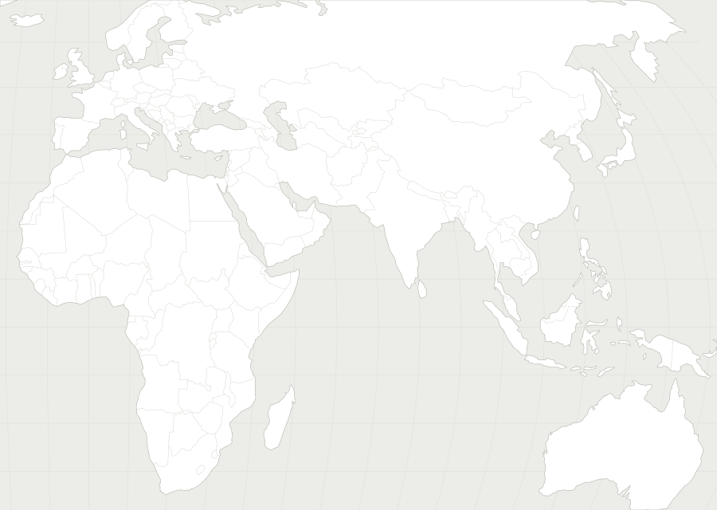

10月27日防务要闻地图

01 · 乌克兰 · 俄乌 / 欧洲泽连斯基重申愿意停火，克宫继续拒绝ISW · 二档读全文 →
02 · 阿拉布加 · 俄乌 / 欧洲智库：中国已成俄无人机战争主要外国供应方Jamestown Foundation · 二档读全文 →
03 · 高北 · 俄乌 / 欧洲英议会报告：皇家海军缺乏守卫「高北」的舰艇USNI News；RUSI · 一档读全文 →
04 · 斯特林基地 · 印太 / 台海「科罗拉多」号将成首艘轮驻西澳的美攻击核潜艇Naval News · 一档读全文 →
05 · 棉兰老岛以南 · 印太 / 台海辽宁舰编队在菲律宾以南活动，菲海警跟踪USNI News；AMTI · 一档读全文 →
06 · 台湾周边 · 印太 / 台海台湾周边侦获共机 3 架次、共舰 8 艘台湾国防部 Taiwan MND；AMTI · 一档读全文 →
08 · 德黑兰 · 中东 / 导弹 / 核四国德黑兰紧急会晤，试图防止对伊冲突重燃The War Zone · 二档读全文 →
11 · 慕尼黑 · 太空 / 产业Helsing 推出 AI 防空系统和两款低价拦截弹Breaking Defense；Defense News · 一档读全文 →
13 · 法国 · 太空 / 产业法国六个月把自杀式无人艇推到海试Naval News · 一档读全文 →
← 美国本土： · ·
未定位： ·
一档二档四档